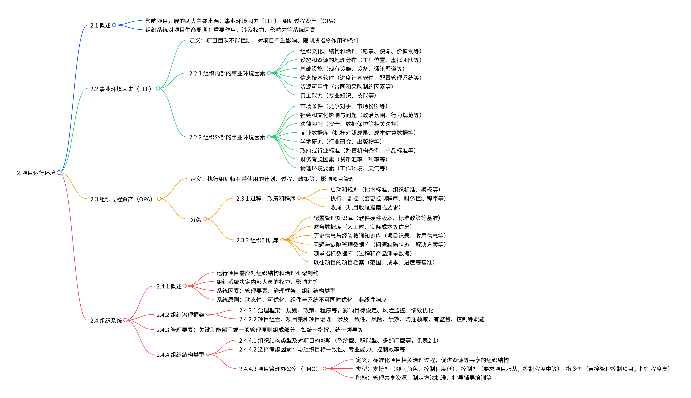

《PMBOK 6th》第2章“项目运行环境”总结
一、章节核心定位
本章聚焦项目所处的内外部环境要素，明确影响项目开展的关键来源——事业环境因素（EEF）与组织过程资产（OPA），同时深入剖析组织系统对项目生命周期的作用机制，为项目管理活动提供环境层面的理论基础与实践指引，帮助项目团队理解环境约束与支撑条件，更科学地制定项目策略。

二、2.1 概述：环境影响的核心框架
- 两大核心影响来源
项目运行环境的影响主要来自两类关键要素，二者共同决定项目的约束条件与可用资源： - 事业环境因素（EEF）：源于项目团队无法控制的内外部条件，对项目起影响、限制或指令作用。
- 组织过程资产（OPA）：执行组织特有的计划、流程、知识库等，为项目管理提供可复用的内部支撑。
- 组织系统的重要性
组织系统通过权力分配、影响力结构、利益协调等因素，直接作用于项目生命周期，影响项目团队的决策效率与资源获取能力，是项目成功的重要组织保障。
三、2.2 事业环境因素（EEF）：不可控的约束与支撑
3.1 定义
项目团队无法控制，对项目产生影响、限制或指令作用的外部与内部条件，是项目规划与执行的“硬约束”或“外部支撑”。
3.2 分类及具体内容
3.2.1 组织内部的EEF（项目所在组织内部的条件）
| 类别 | 具体内容 | 对项目的影响 |
|---|---|---|
| 组织文化与治理 | 愿景、使命、价值观、领导风格、道德规范、职权关系 | 决定项目团队的协作模式、决策效率与风险偏好 |
| 资源地理分布 | 工厂位置、虚拟团队布局、共享系统覆盖范围 | 影响资源调配效率、沟通成本与团队协作方式 |
| 基础设施 | 现有设施、设备、通讯渠道、IT硬件可用性 | 限制或支撑项目的执行效率（如硬件不足可能延误技术类项目） |
| IT软件工具 | 进度计划软件、配置管理系统、工作授权系统 | 直接影响项目管理工具的选择与过程标准化程度 |
| 资源可用性 | 合同制约、批准的供应商清单、合作协议 | 决定项目可获取的外部资源类型与合作边界 |
| 员工能力 | 现有人员的专业知识、技能水平、特定领域经验 | 影响项目任务的执行质量与效率，需匹配任务需求 |
3.2.2 组织外部的EEF（项目所在组织外部的宏观环境）
| 类别 | 具体内容 | 对项目的影响 |
|---|---|---|
| 市场条件 | 竞争对手动态、市场份额、品牌认知度 | 影响项目的市场定位、交付标准与竞争策略 |
| 社会文化因素 | 政治氛围、行为规范、道德观念、文化差异 | 需适配相关方的沟通方式与期望（如跨文化项目的协作模式） |
| 法律限制 | 安全法规、数据保护法、商业行为准则、雇佣法律 | 决定项目的合规边界，如数据类项目需满足隐私保护要求 |
| 商业数据库 | 标杆对照数据、成本估算基准、行业风险库 | 为项目估算、风险评估提供外部参考依据 |
| 学术与行业标准 | 行业研究成果、政府/行业技术标准、工艺规范 | 规范项目可交付成果的质量标准与技术路线 |
| 财务因素 | 货币汇率、利率、通货膨胀率、关税政策 | 影响项目成本预算（如跨国项目的汇率风险）与资金规划 |
| 物理环境 | 工作场所条件、天气状况、地理制约 | 限制项目执行场景（如恶劣天气影响户外施工项目） |
四、2.3 组织过程资产（OPA）：可控的内部支撑资源
4.1 定义
执行组织特有并可复用的计划、流程、政策、知识库等资产，项目团队可在项目期间更新与增补，是项目管理的“内部工具箱”。
4.2 分类及具体内容
4.2.1 过程、政策和程序（标准化的管理流程）
| 项目阶段 | 具体内容 | 作用 |
|---|---|---|
| 启动与规划 | 裁剪组织标准的指南、模板（如项目章程模板、WBS模板）、预批准供应商清单、组织质量/采购政策 | 规范项目启动与规划的流程，减少重复工作 |
| 执行与监控 | 变更控制程序、财务控制流程（如费用审批）、问题/缺陷管理流程、沟通要求（如报告格式） | 确保执行与监控过程的合规性与效率 |
| 收尾 | 项目收尾指南（如终期审计要求、知识转移流程）、可交付成果验收标准 | 保障项目收尾工作的完整性，沉淀项目成果 |
4.2.2 组织知识库（可复用的历史信息与数据）
| 知识库类型 | 具体内容 | 作用 |
|---|---|---|
| 配置管理知识库 | 软件/硬件版本记录、标准政策基准、项目文件版本控制 | 确保项目成果与组织标准的一致性 |
| 财务数据库 | 人工时记录、实际成本数据、预算偏差分析 | 为项目成本估算、预算制定提供历史参考 |
| 经验教训知识库 | 以往项目记录、收尾报告、风险应对案例 | 帮助项目团队规避过往错误，复用成功经验 |
| 问题与缺陷数据库 | 问题/缺陷状态、解决方案、处理结果 | 为项目问题解决提供参考案例，提高响应效率 |
| 测量指标数据库 | 过程绩效数据、产品质量测量结果 | 为项目绩效评估提供内部基准 |
| 项目档案库 | 历史项目的范围/成本/进度基准、风险登记册 | 支撑项目规划的科学性，如参考同类项目的进度计划 |
五、2.4 组织系统：影响项目的内部结构与机制
5.1 概述：系统的核心要素与原则
- 系统核心要素
组织系统通过三大要素影响项目：管理要素（如统一指挥原则）、治理框架（如规则与决策流程）、组织结构类型（如职能型、矩阵型）。 - 系统关键原则
- 动态性：系统随内外部条件变化调整。
- 优化平衡：系统与组件不可同时最优，需权衡取舍。
- 非线性响应：输入变更可能产生不可预测的输出（如资源增加未必成比例提升效率）。
5.2 组织治理框架：决策与监督的规则体系
- 治理框架定义
由规则、政策、程序、系统组成的框架，规范组织目标设定、风险监控、绩效优化的流程，确保项目与组织战略一致。 - 项目层面治理
聚焦项目组合、项目集与单个项目的治理，覆盖四大领域： - 一致性：确保项目目标与组织战略对齐。
- 风险：监控项目整体风险与单个风险。
- 绩效：评估项目进度、成本、质量等绩效指标。
- 沟通：建立相关方信息传递与反馈机制。
治理职能包括监督、控制、整合与决策，确保项目合规且高效推进。
5.3 管理要素：组织管理的基础原则
涵盖组织内部关键管理原则与职能分配，为项目团队提供内部协作的“行为准则”，核心包括： - 统一指挥（员工仅接受一个上级指令）、统一领导（一组活动对应一个计划/领导人）。 - 职责与职权匹配（基于技能与经验分配工作与权限）。 - 资源优化使用、畅通沟通渠道、员工安全保障等。
5.4 组织结构类型：项目的组织支撑模式
- 主要结构类型及对项目的影响
不同结构决定项目经理的权限、资源可用性与项目协作效率，核心类型对比如下：
| 组织结构类型 | 项目特征 | 项目经理权限 | 资源可用性 | 适用场景 |
|---|---|---|---|---|
| 职能型（集中式） | 按职能部门划分（如设计、制造） | 极少或无，依赖职能经理协调 | 兼职资源，优先级由职能经理决定 | 小型、单一职能的项目（如部门内部系统优化） |
| 矩阵型-强 | 项目作为独立职能，与职能部门并行 | 中到高，可主导资源分配 | 中到高，资源优先服务项目 | 跨职能、需协调多部门的项目（如新产品研发） |
| 矩阵型-弱 | 项目依附于职能部门 | 低，需服从职能经理安排 | 低，资源以职能工作为主 | 对职能部门依赖度高的项目（如部门内部流程改进） |
| 项目导向型（复合/混合） | 以项目为核心，独立于职能部门 | 高到几乎全部，全权管理项目 | 高到几乎全部，资源专属项目 | 大型、复杂、长期的项目（如大型基建项目） |
| 虚拟型 | 基于网络架构，团队远程协作 | 低到中，依赖沟通工具协调 | 低到中，资源分散且动态调整 | 跨地域、灵活组建团队的项目（如远程软件开发） |
| 项目管理办公室（PMO） | 整合多项目管理，标准化流程 | 高到几乎全部，直接管理项目 | 高到几乎全部，统筹共享资源 | 多项目并行、需统一治理的组织（如集团级项目群） |
- 项目管理办公室（PMO）详解
- 定义：标准化项目治理流程、促进资源/方法/工具共享的专门结构。
- 类型及控制程度：
- 支持型：顾问角色（提供模板、培训），控制程度低。
- 控制型：要求项目服从统一标准（如强制用特定方法论），控制程度中等。
- 指令型：直接管理项目（指定项目经理），控制程度高。
- 核心职能：管理共享资源、制定项目管理标准、提供指导培训、监督项目合规性、协调跨项目沟通。
六、章节核心价值与实践意义
- 对项目管理的指导作用
帮助项目团队清晰识别内外部约束（如EEF中的法律限制）与可用支撑（如OPA中的经验教训），避免因环境认知不足导致的计划偏差，同时根据组织系统特点（如结构类型、PMO职能）选择适配的项目管理模式。 - 实践应用重点
- 启动阶段：优先分析EEF与OPA，明确项目的可行性边界与资源基础。
- 规划阶段：结合组织治理框架与管理要素，制定符合组织规则的项目计划。
- 执行与监控阶段：利用OPA中的流程与知识库解决问题，同时应对EEF的动态变化（如市场条件调整）。